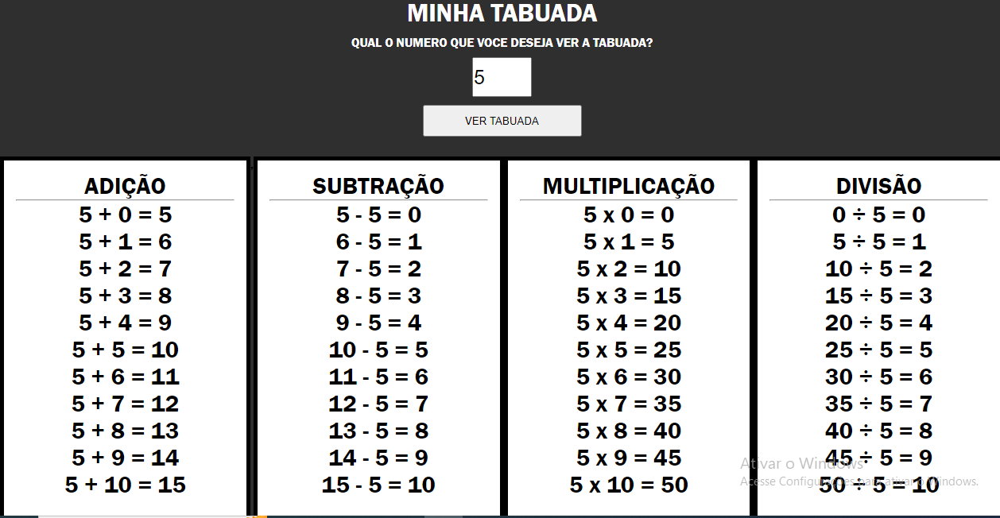
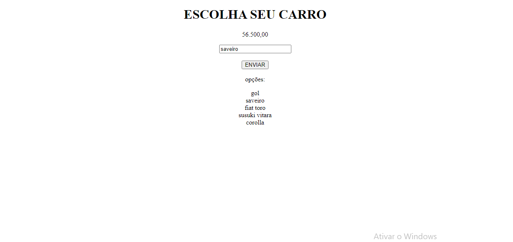
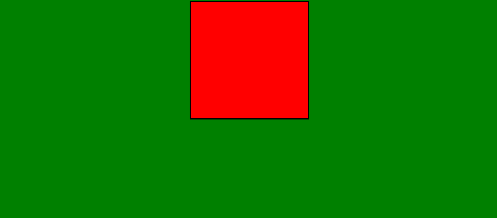
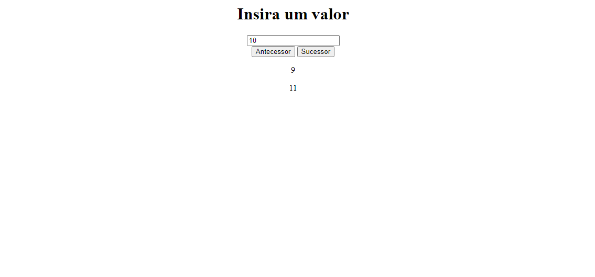

Finalmente chegou a hora de ver os projetos
Aqui podemos ver que temos projetos como a tabuada.
irei deixar algumas imagens explicando sobre cada projeto que realizamos em sala de aula .
Clique nas abas acimas que você ira ver detalhadamente como cada projeto funciona.

Essa tabuada nós estavamos aplicando o uma função com o For e assim conseguimos
criar os calculos para a realização automatica da tabuada.

Aqui nós temos uma tabela de preço usando switch
fazendo com que você saiba o preço dos carros ao você colocar
o nome do carro

Aqui nós criamos um quadrado com duas cores porem
quando eu uso o movimento do cursor do mouse ele muda e alterna a cor
usando o onmouseenter & onmouseleave.

Aqui nós criamos um antecessor & sucessor
usando uma função para realizar automaticamente a resposta
